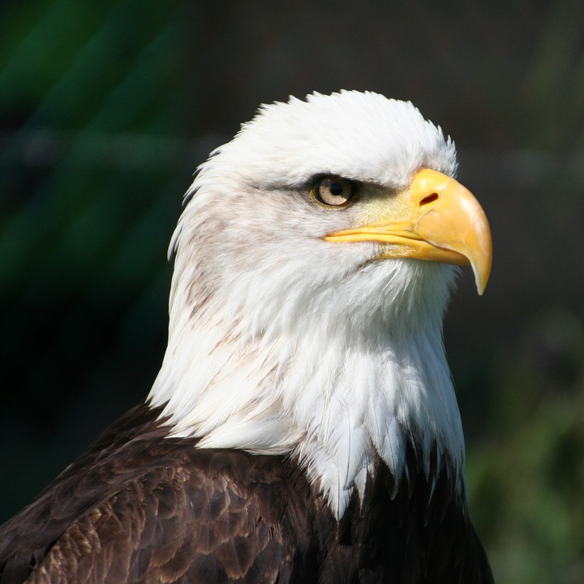

Adelaars

Arenden of adelaars zijn dagactieve, middelgrote tot grote roofvogels met meestal brede vleugels, stevige snavel en scherpe klauwen.
Arenden werden en worden veel gebruikt als symbool door landen en organisaties, omdat ze macht, schoonheid en onafhankelijkheid zouden uitstralen.
Zoals alle roofvogels hebben arenden een grote, krachtige haaksnavel, om vlees van een prooi af te scheuren.
Arenden komen hoofdzakelijk voor in Europa, Azië en Afrika. Wellicht een van de bekendste arenden, de Amerikaanse zeearend, leeft in Noord-Amerika.
bron: https://nl.wikipedia.org/wiki/Arend_(roofvogel)